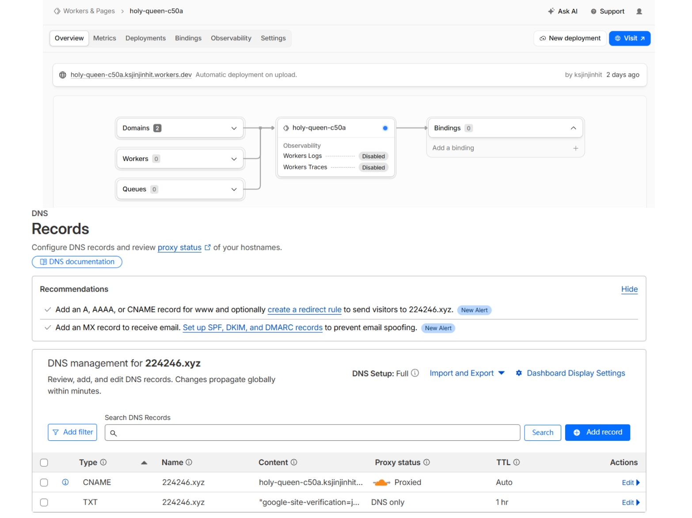
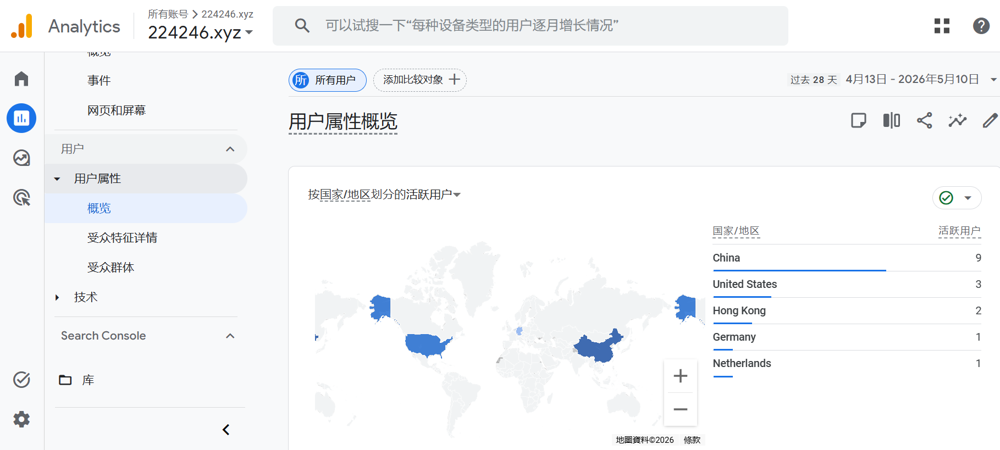
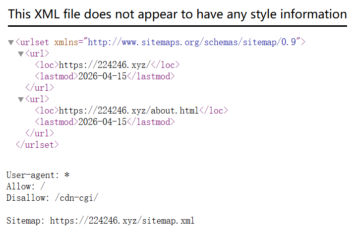

Hands-On SEO Implementation
Real Projects I Built and Optimized From Scratch
Below are practical SEO and web development projects I completed independently. All work was done without prior professional experience.
1. Cloudflare Pages Static Website Deployment

Custom domain + DNS + HTTPS + global CDN
2. Google Search Console (GSC) Setup

Full domain verification + sitemap submission
3. Google Analytics 4 (GA4) Integration

Live user tracking with GA4: Real visitor data collected
4. Core SEO Foundation Setup

Sitemap + robots.txt + meta tags optimization